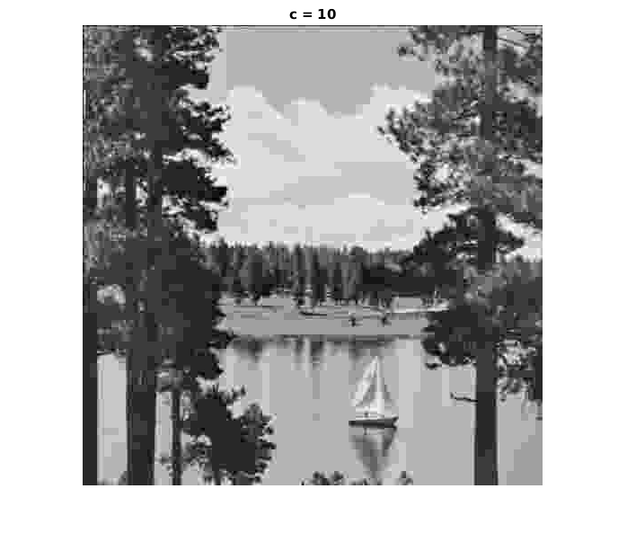

This code will calculate reconstructed image for c = 1 to 50
Contents
Read the image
image = imread('LAKE.TIF');
F = [16 11 10 16 24 40 51 61;
12 12 14 19 26 58 60 55;
14 13 16 24 40 57 69 56;
14 17 22 29 51 87 80 62;
18 22 37 56 68 109 103 77;
24 35 55 64 81 104 113 92;
49 64 78 87 103 121 120 101 ;
72 92 95 98 112 100 103 99];
start loop for c
for c = 1:50
for i = 1:8:512
for j = 1:8:512
rec1 = uint8( myIDCT(myDCT_dequantisation( myDCT_quantisation( myDCT(image(i:i+7,j:j+7),create_dct_mat()),F,c ),F,c), create_dct_mat()));
im(i:i+7,j:j+7) = rec1;
end
end
if c == 10
imwrite(uint8(im),'q4c10.TIFF');
disp('We observe that as the c increases the perceptibility of the image decreases');
imshow(im) , title('c = 10');
end
rm(c) = RMSE(image,im);
ent(c) = My_entropy(im);
end
disp(rm);
disp(ent);
We observe that as the c increases the perceptibility of the image decreases
Columns 1 through 7
6.0237 7.4166 8.5218 9.4692 10.3720 11.1707 11.9116
Columns 8 through 14
12.7094 13.3712 14.0019 14.7476 15.4019 15.9309 16.8438
Columns 15 through 21
17.2720 18.0373 18.9014 18.7264 19.4756 20.7182 20.7181
Columns 22 through 28
20.7293 21.2989 22.2531 23.0944 23.5890 23.6070 23.7330
Columns 29 through 35
24.1290 24.8774 25.7325 26.3610 26.8703 27.6303 28.6594
Columns 36 through 42
29.6901 30.4450 30.7871 31.1806 31.6137 32.0839 32.6186
Columns 43 through 49
32.9391 33.1969 33.7439 34.0514 34.4048 34.9271 35.6089
Column 50
36.4541
Columns 1 through 7
7.4585 7.3681 7.1912 6.9665 6.7441 6.5651 6.4087
Columns 8 through 14
6.2253 6.0299 5.8671 5.7616 5.6339 5.5008 5.3990
Columns 15 through 21
5.1853 5.0799 4.9757 4.7438 4.6380 4.5453 4.3146
Columns 22 through 28
4.1976 4.1027 3.9082 3.6827 3.6083 3.5193 3.3934
Columns 29 through 35
3.2851 3.1538 3.0488 2.8153 2.7159 2.6631 2.6123
Columns 36 through 42
2.6097 2.5781 2.5273 2.4760 2.4077 2.3640 2.3213
Columns 43 through 49
2.2394 2.1465 1.9811 1.9284 1.9075 1.9012 1.9025
Column 50
1.8964
